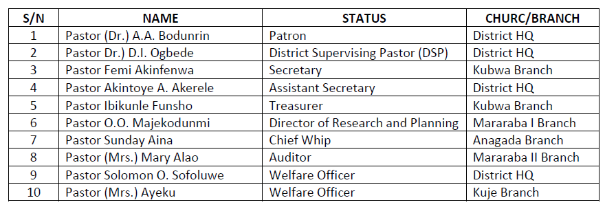

PASTORS’ COUNCIL
Introduction
The Pastors’ Council, Dakibiyu District was formally inaugurated on Saturday 22nd November, 2015 by the Conference Supervising Pastor - Special Apostle Pastor Ademola Popoola along with four other National Officers namely, Special Apostle Pastor Fola Onafuye; Special Apostle Pastor Katanga (National Secretary); Special Apostle Pastor Ogunnaike (SA to CSP); and Special Mother-in-Israel Pastor Olumodeji (National Welfare Officer and DSP, St Mary).
The inauguration ceremony was performed at the Dakibiyu District Headquarters, Abuja; and a Seminar titled The Lifestyle of a Minister was also organized for the event. The Executive Committee (Officers) for the Council was announced, anointed and put in place; comprising the Patron (Special Apostle Pastor (Dr) A.A. Bodunrin), the District Supervising Pastor (Special Mother-in-Israel Pastor Dr. D.I. Ogbede); the Council Secretary (Special Apostle Pastor Femi Akinfenwa); the Council Assistant Secretary (Special Apostle Pastor Akintoye A. Akerele) and other Executives.
The Council has remained active and has been effectively functioning in the District to the glory of God
DUTIES/FUNCTIONS OF DAKIBIYU DISTRICT PASTORS’ COUNCIL
MEMBERSHIP AND EXECUTIVES OF DISTRICT PASTORS COUNCIL
To the glory of God Almighty, the Council currently has 30 Pastors, ordained by the Spiritual Father Most Rev. (Dr) S.A Abidoye. Twenty-eight (28) of these Pastors are very active in the District; and they cut across the District Headquarters and Church Branches that include Kubwa, Mararaba I, Mararaba II, Kuje, Anagada and Guaraka Branches. The other two (2) Pastors have left the District.
The Council also has Pastors-in-training who will be ordained in September 2021 at Galilee Land Orile-Igbon by the Spiritual Father.
The current Executives of Dakibiyu District Pastors Council is presented below:

TRAINING/CAPACITY BUILDING AND SPIRITUAL DEVELOPMENT FOR DISTRICT PASTORS
In order to enable the Pastors to function effectively and optimally in their calling and in the Pastoral ministry; continuous Spiritual training, re-training and capacity building are regularly organised for spiritual growth and development.Strength/Administration
Counting numbers since the commencement of Prophetic ordination in the District in 1999, the District has presented sixty-five (65) persons for ordination. Presently, there are fifty-five (55) ordained in the District. We have 18 Prophets and 37 Prophetesses with several visioners, dreamers and recorders. The Council communicates with her members via whatsapp group platform “Dakibiyu Dist Daniel Band, CoProphets Dakibiyu Abuja and Exco Dakibiu CoProphets;” announcements in church and SMS as occasion demands.NEW CONFERENCE SUPERVISING PASTOR (CSP) APPOINTED AT GALILLEE LAND, ORILE IGBON, ILORIN
In February 2021, the appointment of a new Conference Supervising Pastor in person of Special Apostle Pastor Fola Onafuye was announced by the Spiritual Father, Most Rev. (Dr.) S.A. Abidoye. He succeeded Special Apostle Pastor Ademola Popoola.2021 PROGRAMME OF ACTIVITIES FOR DAKIBIYU DISTRICT PASTORS’ COUNCIL
In line with its tradition, a series of activities have been drawn up for execution by the Council in 2021. The scheduled programme includes Quarterly general meetings, Executive meetings, scheduled Training/Capacity Building programmes, Outreaches, etc. These highlights are presented in the table below: